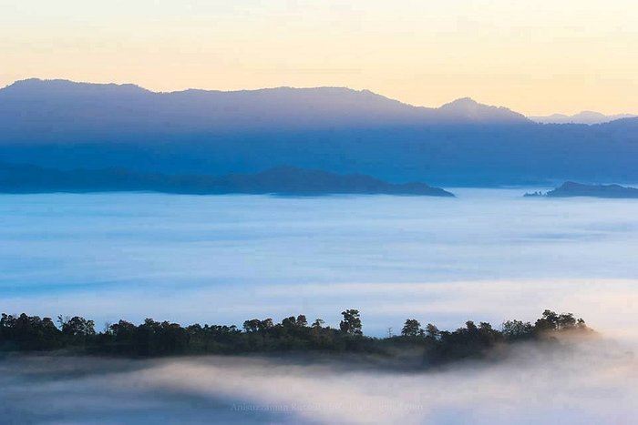

My Sajek Tour
Author: Ruhul Shovon

I recently had the opportunity to visit Sajek Valley, a beautiful hill station located in the northeastern part of Bangladesh. From the moment I arrived, I knew it was going to be a trip of a lifetime.
The journey to Sajek Valley began with a scenic helicopter ride over the valley and the surrounding mountains. The views were breathtaking, with lush green forests and tall mountains as far as the eye could see. As we landed in Sajek, I was greeted by the fresh mountain air and the tranquil atmosphere of the valley.
My first stop was a local village, where I was welcomed by the friendly members of the Chakma tribe. They showed me around their village, and I was able to learn about their unique culture and traditions. I was particularly impressed by their traditional houses, which were built on stilts and had thatched roofs made of bamboo.
Next, I went on a hike through the forest. The trail was well-maintained, and I was accompanied by a local guide who pointed out the different types of trees and plants along the way. We also came across a few streams, which provided a refreshing break from the heat. The highlight of the hike was reaching the top of a hill, where I was rewarded with a panoramic view of the valley.
After the hike, I set up camp for the night. I had chosen a basic camping option, which included a tent and a sleeping bag. The camping site was surrounded by tall trees and was in a perfect location to enjoy the sunset. I spent the evening around a campfire, roasting marshmallows and chatting with other travelers.
The next day, I visited a Buddhist temple and a monastery, which offered a peaceful and serene atmosphere. The temples were beautifully decorated and had intricate carvings on the walls. The monks were very welcoming and I was able to learn more about Buddhism and the local culture.
Finally, it was time to say goodbye to Sajek Valley. Although I was sad to leave, I knew that I would always treasure the memories of my trip. Sajek Valley is truly a hidden gem of Bangladesh, with its picturesque landscapes, lush green forests, and tranquil atmosphere. It is a destination that should not be missed by anyone looking for a unique travel experience.
Another paragraph about this article visit here
Cox's Bazar Tour with special one
Author: Ruhul Shovon

I recently had the opportunity to visit Cox's Bazar, a popular tourist destination located in the southeastern part of Bangladesh. From the moment I arrived, I knew it was going to be an unforgettable trip.
The first thing that struck me about Cox's Bazar was its natural beauty. The town is situated along a 120 km long beach, which is known for its golden sand and crystal clear water. I spent most of my time on the beach, soaking up the sun and enjoying the cool sea breeze. I also went for a swim in the sea, which was a refreshing experience.
One of the highlights of my trip was a visit to the Cox's Bazar Sea Beach. The beach is known for its long stretch of sand, and it was a beautiful sight to see. I also visited the Laboni Point, which is the main beach in Cox's Bazar and the most popular spot for tourists. The beach was crowded with local and foreign tourists, but it was still a great place to relax and soak up the sun.
Another popular activity in Cox's Bazar is visiting the local markets. The town is known for its handicrafts, and I was able to find some unique souvenirs. I also visited a local fish market, which was an interesting experience. The market was bustling with activity and I was able to see a wide variety of fish being sold.
I also had the opportunity to visit the Cox's Bazar Buddhist Temple, which is located on a hill overlooking the town. The temple was beautifully decorated and had intricate carvings on the walls. I was able to learn more about Buddhism and the local culture, and the view from the temple was breathtaking.
Finally, it was time to say goodbye to Cox's Bazar. Although I was sad to leave, I knew that I would always treasure the memories of my trip. Cox's Bazar is a beautiful destination that offers something for everyone - from its natural beauty, to its culture and history. It's a place where you can enjoy a relaxing beach holiday, while also taking in the local culture.